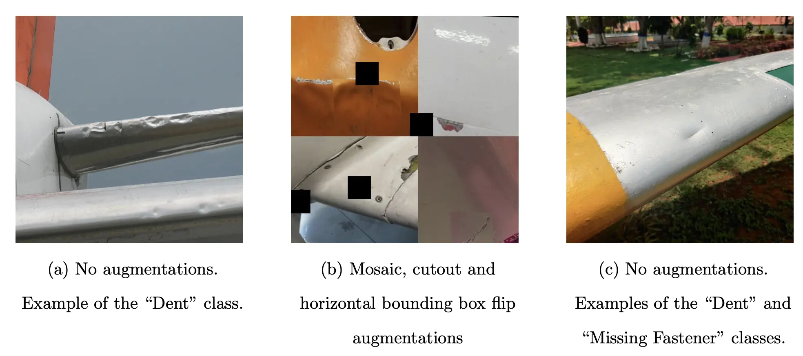
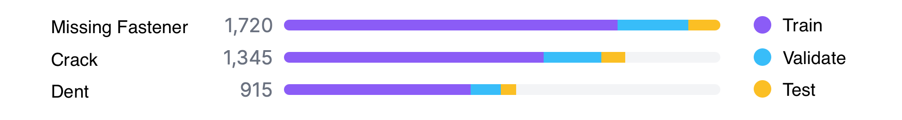
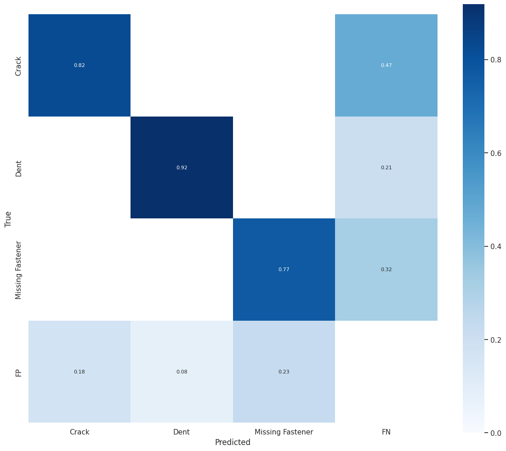

Summary
- Identified a research gap for automated aircraft defect detection systems
-
Devised an automated aircraft visual inspection (AAVI) system that uses a lightweight CNN
model to defect a range of aircraft defects in real-time
-
Compiled a novel, public aircraft defect dataset with Dent, Crack and Missing Fastener
classes
-
Finetuned the YOLO-NAS-L model on the dataset as a proof of concept and achieved the
current best results in the literature for automated aircraft defect detection
-
AAVI selected among the top 5% of UTS Engineering capstone projects and presented at the
2024 UTS Capstone Showcase - Shortlisted for the UTS IEEE award
-
“Aircraft Visual Inspection; A Benchmark of Machine Learning Models” accepted for poster
publication at the 2024 Australasian Conference on Robotics and Automation (ACRA)
Project Overview
The Automated Aircraft Visual Inspection (AAVI) project represents a significant advancement
in automated defect detection for aircraft maintenance. Using state-of-the-art YOLO-NAS (You
Only Look Once - Neural Architecture Search) technology, this system achieves unprecedented
accuracy in identifying various types of aircraft surface defects.
This innovative solution addresses the critical need for efficient and reliable aircraft
inspection processes, potentially reducing inspection time while maintaining or improving
accuracy.
Our approach involved several key steps including dataset preparation with diverse aircraft
surface defect images, implementation of YOLO-NAS architecture for defect detection, model
training with optimised hyperparameters, extensive testing and validation on real-world
scenarios, and thorough performance analysis and optimisation.
Methodology
The AAVI system combines hardware and software innovations to create a streamlined approach to
aircraft defect inspection. Its design centers around two components:
1. Data Acquisition Network (DAN)
The DAN employs a hybrid solution of drones and stationary
cameras to ensure thorough visual coverage of aircraft, even in challenging inspection areas.
Unmanned Aerial Vehicles (UAVs), such as DJI Matrice drones, scan the external and upper
surfaces, while stationary cameras focus on intricate areas like undercarriages and landing
gear. Images captured by the DAN are streamed in real-time for processing.
2. Data Analysis and Sharing Hub (DASH)
Captured image data is routed to DASH, which uses DCNN
models for defect detection. The first model performs Defect Detection in Real-Time (DDRT),
designed for speed and edge-device efficiency, such as GPU-enabled platforms. This is critical
for providing actionable insights within the 20–40 minute window between flights. The second
model, for Defect Detection Post-Hoc (DDPH), prioritises high precision and recall, ensuring
even subtle defects not flagged by the real-time system are identified before the aircraft
Post-Hoc (DDPH), prioritises high precision and recall, ensuring even subtle defects not
flagged by the real-time system are identified before the aircraft resumes operations.
The methodology is bolstered by image-labeling mechanisms, allowing models to retrain and
adapt over time. Insights from failed inspections can propagate across systems worldwide,
continually refining the process. This adaptive design makes the system resilient and
future-proof, with potential applications in edge hardware scenarios, regulations adherence,
and evolving model architectures.

AAVI System Process Flowchart.
Dataset Creation and Composition
To facilitate the training and evaluation of the AAVI models, a comprehensive dataset was
curated from six publicly available datasets, consisting of 4,492 images. After refinement,
this dataset focused on three defect classes—cracks, dents, and missing fasteners. A key
element of this work involved intensive cleaning, where duplicate images, augmented data, and
unsuitable images (e.g., video-game captures and misannotated photos) were filtered out.
Class distributions revealed imbalances—missing fasteners were the most common (1,720
instances), while dents were underrepresented (915 instances). These limitations influenced
model performance but were mitigated through carefully designed augmentations.
To improve robustness against variability in real-world inspections, augmentations were
applied, such as flipping, cropping, mosaics, and exposure adjustments. This expanded the
dataset to over 5,800 training images, allowing the model to better generalise across diverse
inspection scenarios.

Finally, the dataset was split into 78% training, 15% validation, and 7% testing subsets.
While slightly under the conventional 30% validation/testing split, this division maximised
the model’s exposure to valuable training data while retaining enough test cases for reliable
evaluations.

Class breakdown of the compiled dataset.
Results
The evaluation focused on both model performance and practical feasibility in real-time
environments. The YOLO-NAS-L model was fine-tuned on the dataset and compared against
competing architectures in the YOLO family (YOLOv5-L, YOLOv8-L, YOLOv9-e).
Performance comparison of YOLO family models finetuned on the novel dataset.
| Metric |
v5-L |
v8-L |
NAS-L (47%) |
v9-e |
| Recall(50) |
0.759 |
0.784 |
0.8167 |
0779 |
| Precision(50) |
0.877 |
0.880 |
0.8382 |
0.881 |
| mAP(50) |
0.825 |
0.848 |
0.8467 |
0.840 |
| F2(50) |
0.78 |
0.8014 |
0.8209 |
0.8053 |
| FPS (FP16) |
131.06 |
136.71 |
98.52 |
73.45 |
The fine-tuned YOLO-NAS-L model demonstrated strong results, achieving an mAP@50 of 84.67%. Using and optimised
confidence threshold of 47% it achieved an F2-score of 82.09%, with precision at 83.82% and
recall at 81.67%. Importantly, the system achieved a
comparable rate of false negatives (33%) to human inspectors while significantly reducing inspection times.
Latency tests demonstrated the model’s viability for real-time deployment. On an NVIDIA T4
GPU, inference latency was 10.15 ms or 98.52 frames per second using FP16
quantization.

Confusion Matrix for the Finetuned YOLO-NAS model optimised at 47% confidence.
Class-Specific Insights:
• Dents: High detection accuracy (~92%) and the lowest false negative rate (21%).
• Cracks: Lowest performance due to class imbalances and dataset variability; 47% false
negatives.
• Missing Fasteners: Intermediate performance with 32% false negatives.
Limitations remain in scenarios with non-standard lighting, weather conditions, and rare
defect types. Addressing these will improve generalisability and reliability.
Inference Examples
Potential Improvements
1. Dataset Refinement
Increasing diversity in images by incorporating
weather conditions, angles, and lighting scenarios. Labeling defect severity can add practical
value for prioritizing maintenance actions.
2. Model Innovation
Expanding the DDPH component with advanced NAS
techniques, such as the Clonal Selection Algorithm (CSA), tailored for high-recall,
high-precision tasks.
3. Hardware Optimisation
Validating DDRT for deployment on compact platforms
like NVIDIA Jetson Xavier, ensuring real-time, edge-based inspections using industry-standard
drones.
Acknowledgements
I would like to express huge thanks to my project supervisor, Mason Brown,
who helped guide me through the entirety of this project offering sage advice and patiently
fielding questions.
Core Technologies and Skills
Technologies and Tools
YOLO-NAS
Python
PyTorch
Roboflow
Supergradients
Ultralytics
Git
Overleaf
AI & ML
Deep Learning
Computer Vision
Object Detection
Dataset Creation
Dataset Augmentation
Model Finetuning
Model Evaluation
Evaluation Metrics